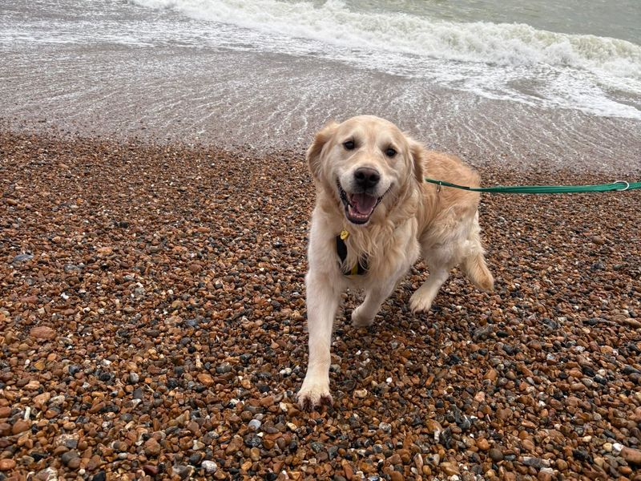
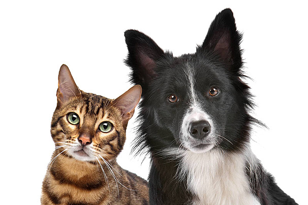

Group member: Your name
1. Project summary
3–5 sentences: what your report is about, where it takes place, what you can document, and what “live” means for your project.
2. Context and background
- Key facts (3–6 bullets)
- Key terms (3–6 short definitions)
- Links to organisers / official pages / public information
3. Case studies and inspirations (2–4)
Use screenshots + links to the original source. Explain what you learned from each example.
Case study 1: Title
Link: https://...
What we learned (3–5 lines): structure, tone, evidence, ethics, how context is added.

Screenshot credit + source link.
Case study 2: Title
Link: https://...
What we learned (3–5 lines): what we will adopt, and what we will avoid.
Screenshot credit + source link.
4. Planning and method
- Format: video / audio / written updates / mixed media
- Location plan: where you will report from and why
- Shot plan: wide / medium / close / cutaways
- Interviews (optional): who, why, consent plan
- Verification: what counts as evidence and how you will check it
Planning image 1 (optional)
A map, floorplan, storyboard frame, or location screenshot.

Image credit + source link (if applicable).
Planning image 2 (optional)
A shot list photo, equipment setup, or diagram of camera position.

Image credit + source link (if applicable).
5. Process and drafts
- What you filmed (short log)
- What is missing / what you still need
- Edit plan: beginning / middle / end + any on-screen text needed
- Ethics and safety notes: consent, access limits, risk plan
Audio note (optional)
A short reflection, ambient sound, or an interview test recording.
Audio credit + date (and consent note if relevant).